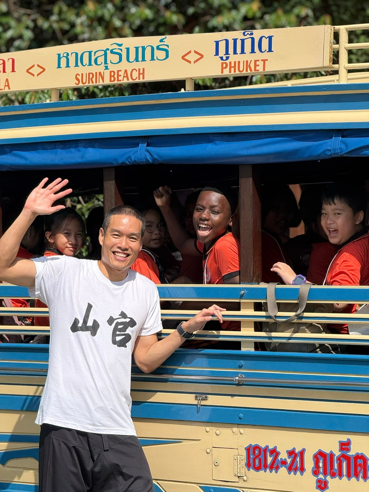
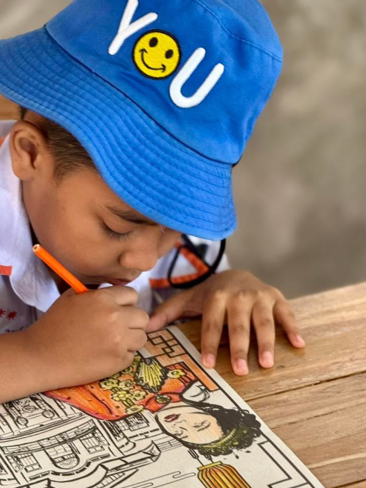
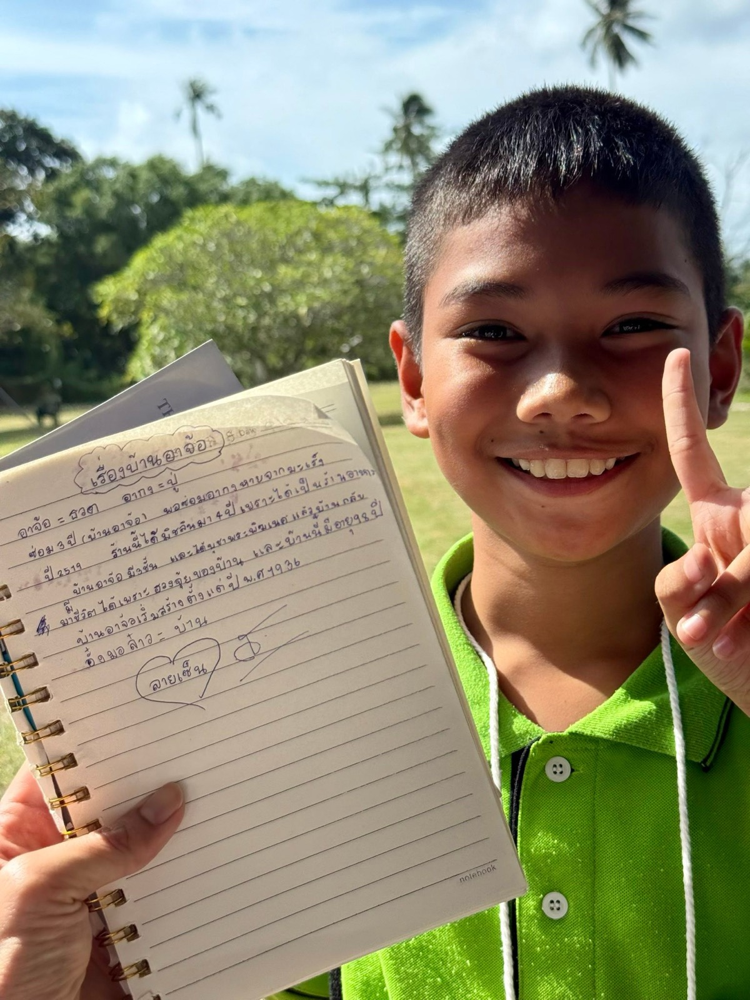
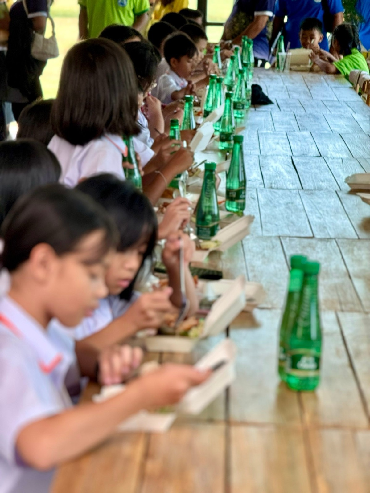
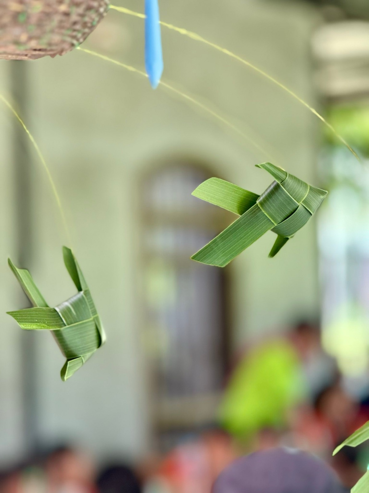
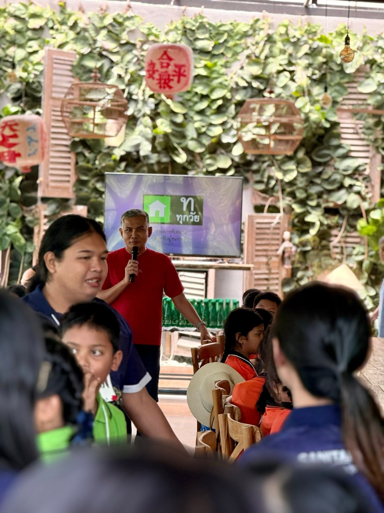

2568 · เวที · เหตุการณ์
กิจกรรมชุมชนด้านสิ่งแวดล้อมภาค 2 ต้อนรับนักเรียนประถม 150 คน






กิจกรรมชุมชนกับการบริหารจัดการสิ่งแวดล้อม และพลังงานทดแทน ภาค 2 🎉❤️
จบปูใส่กระด้งหนักกว่ารอบแรก 🤣 เพราะรอบนี้เป็นชั้นประถม จาก 4 โรงเรียน สังกัด อบจ.ภูเก็ต มากับคณะรวมกว่า 150 ชีวิต เลยต้องเปลี่ยนไอเดียทำฐานใหม่ ลดวิชาการ เพิ่มวิชาฮา 😆 เด็กๆ ชอบบบ 😇❤️
ขอบคุณคณะ นร และ ครู รร อบจภูเก็ต ❤️
ขอบคุณทีมงานบ้านอาจ้อทุกๆคน 💪
ขอบคุณทีม solarcell homeguard 🌿
ภาพเยอะหน่อย บรรยายใต้ภาพเลยคับ 😇❤️
#อบจภูเก็ต ❤️
#longdaengPhuket 🧧
#tohdaengPhuket 🧧
#บ้านอาจ้อ ❤️